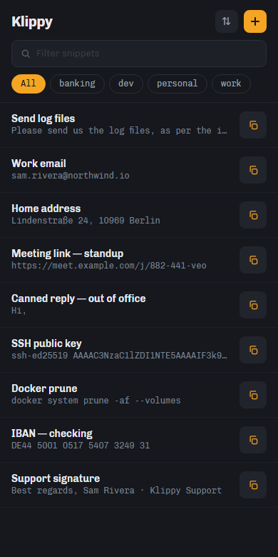

Home
What it does¶
-
Finds it before you finish typing
Give a snippet a quick-code —
slffor "Send log files" — and it jumps to the top. Or search: every space-separated term prefix-matches a word in the label, content or tag. The index is precomputed, so a keystroke costs microseconds. -
Runs things, not just pastes them
Some snippets are a link or a file to open, a script to run or an app to start. Mark one Execute and triggering it runs it. Without the marker nothing runs — Klippy never decides on its own that something looks launchable.
-
Keeps your secrets local
A
variables.txtfile holds local defines that resolve into snippets at trigger time and are never exported. One name can carry two flavours, so an item picks the form it needs. -
Remembers what you copied
Clipboard history on Windows covers text, files and images — with a deliberate list of what is not recorded, so a password manager's clipboard never lands in it.
-
Comes when called
A global hotkey summons Klippy over whatever you are working in, on Windows and macOS. Type, press Enter, and it is on your clipboard and out of your way.
-
Same snippets, every device
One .NET 10 and Avalonia codebase for Windows, macOS, Android and iOS. Export from one, import to another, and your store travels with you.
On mobile¶
